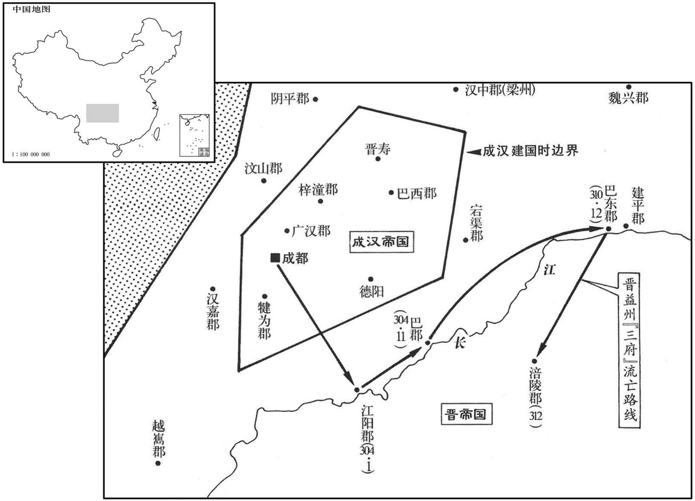
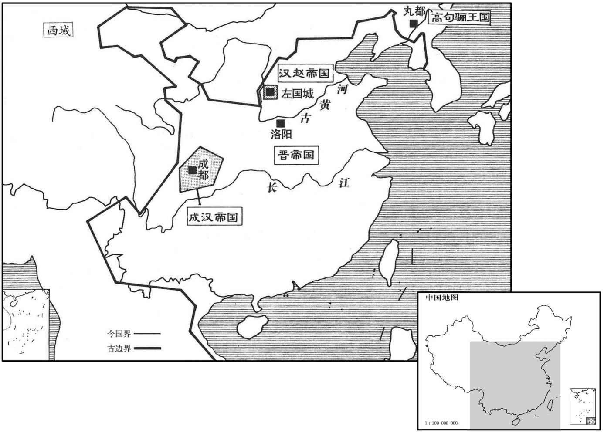
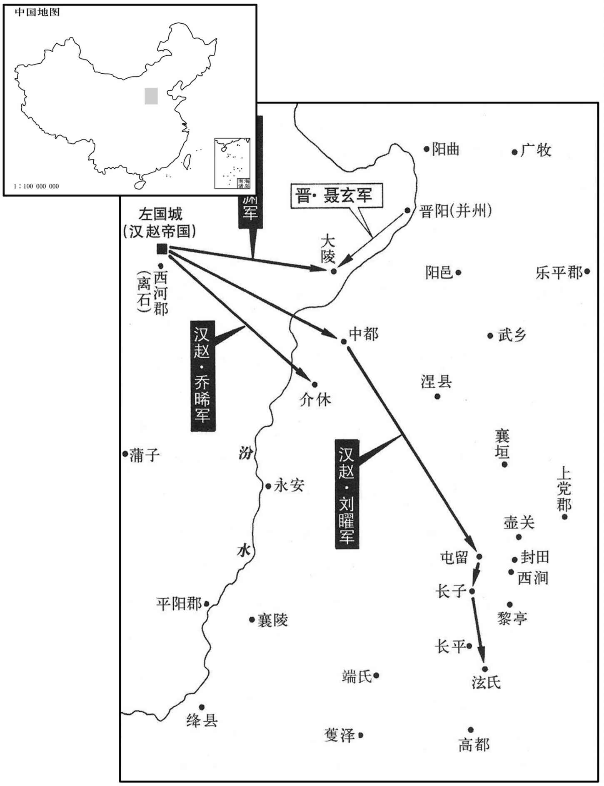
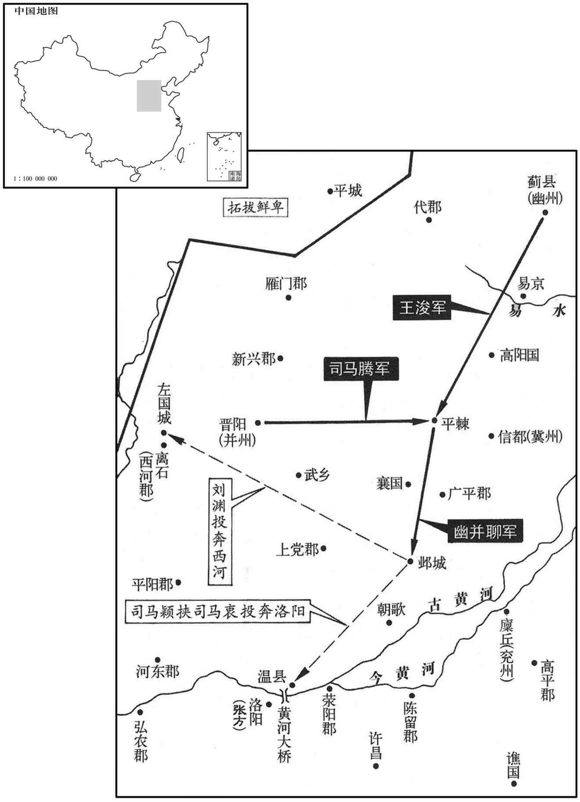

卷次与人物目录 / 卷85
资治通鉴 · 卷第八十五【晋纪七】
公元304年至公元304年 · 原文、白话与胡三省注
本页按胡注本编排保存全卷内容。白话采用本站所据译本，未可靠对应的内容另列说明；事件标题用于定位，并非原书文字。
本卷共37段原文，37段有译文对应，0段缺译或待核对。
卷第八十五【晋纪七】起昭阳大渊献（癸亥），尽阏逢困敦（甲子），凡二年。
卷首原文与注释
孝惠皇帝中之下〔大〔【章：甲十一行本「大」；乙十一行本同；熊校同。安二年〔（癸亥、三○三）〕
春，正月，李特潜渡江击罗尚，水上军皆散走。〔郫水上军也。〕蜀郡太守徐俭以少城降，〔少，诗照翻。降，户江翻；下同。〕特入据之，惟取马以供军，余无侵掠；赦其境内，改元建初。〔考异曰：帝纪：「太安元年五月，特自号大将军。」载记：「太安元年，特称大将军，改元。」后魏书李雄传云：「昭帝七年，特称大将军，号年建初。」昭帝七年，太安元年也。祖孝征修文殿御览云：「太安二年，特大赦，改年建初元年。特见杀。」三十国晋春秋云：「太安二年正月，特僭位改年。」今从御览等书。〕罗尚保太城，遣使求和于特。蜀民相聚为坞者，皆送款于特，特遣使就抚之；〔使，疏吏翻。〕以军中粮少，〔少，诗沼翻。〕乃分六郡流民于诸坞就食。李流言于特曰：「诸坞新附，人心未固，宜质其大姓子弟，〔质，音致。〕聚兵自守，以备不虞。」又与特司马上官惇书曰：「纳降如受敌，不可易也。」〔恐其诈降，当严为之备，如待敌然。易，以豉翻。〕前将军雄亦以为言。特怒曰：「大事已定，但当安民，何为更逆加疑忌，使之离叛乎！」
朝廷遣荆州刺史宗岱、建平太守孙阜帅水军三万以救罗尚。〔朝，直遥翻。守，式又翻。帅，读曰率；下同。〕岱以阜为前锋，进逼德阳；特遣李荡及蜀郡太守李璜就德阳太守任臧共拒之。〔李特盖又分广汉立德阳郡。任，音壬；下同。〕岱、阜军势甚盛，诸坞皆有贰志。益州兵曹从事蜀郡任叡言尚曰：「李特散众就食，骄怠无备，此天亡之时也。宜密约诸坞，刻期同发，内外击之，破之必矣！」尚使叡夜缒出城，〔任，音壬。缒，驰伪翻。〕宣旨于诸坞，期以二月十日同击特。叡因诣特诈降，特问城中虚实，叡曰：「粮储将尽，但余货帛耳。」叡求出省家，特许之，遂还报尚。〔考异曰：载记作「任明」。罗尚传作「任锐」。今从华阳国志。省，悉景翻。〕二月，尚遣兵掩袭特营，诸坞皆应之，特兵大败，斩特及李辅、李远，皆焚尸，传首洛阳，流民大惧。李〔【章：甲十一行本「李」上有「李流」二字；乙十一行本同；退斋校同；张校同，云无注本亦无。】〕荡、李雄收余众还保赤祖。〔赤祖，地名，当在鼦竹东。祖，子邪翻。〕流自称大将军、大都督、益州牧，保东营，荡、雄保北营。孙阜破德阳，获寋硕，〔寋，姓也；与蹇同。〕任臧退屯涪陵。〔此涪陵，乃汉广汉郡之涪县，晋梓潼郡之涪城县，非涪陵郡之涪陵。广汉梓潼之涪，今鼦州，今人犹谓鼦州为涪陵，涪陵郡之涪陵，则今涪州涪陵县也。〕
三月，罗尚遣督护何冲、常深攻李流，涪陵民药绅亦起兵攻流。流与李骧拒〔【章：甲十一行本「拒」下有「深使李荡李雄拒」七字；乙十一行本同；退斋校同；张校同，云无注本亦脱此八字。按「八」当为「七」字之误。】〕绅，何冲乘虚攻北营，氐苻成、隗伯在营中，叛应之。荡母罗氏擐甲拒战，〔擐，音宦。〕伯手刃伤其目，罗氏气益壮；〔【章：甲十一行本「壮」下有「营垂破」三字；乙十一行本同；张校同；退斋校同。】〕会流等破深、绅，引兵还，与冲战，大破之。成、伯率其党突出诣尚。流等乘胜进抵成都，尚复闭城自守。〔复，扶又翻。〕荡驰马逐北，中矛而死。〔中，竹仲翻。〕
朝廷遣侍中刘〔【章：甲十一行本「刘」上有「燕国」二字；乙十一行本同；张校同；退斋校同。】〕沈假节统罗尚、许雄等军，〔罗尚帅益州兵，许雄帅梁州兵。沈，持林翻。〕讨李流。行至长安，河间王颙留沈为军师，遣席薳代之。〔薳，羽委翻。〕
李流以李特、李荡继死，宗岱、孙阜将至，甚惧。李含劝流降，流从之；李骧、李雄迭谏，不纳。夏，五月，流遣其子世及含子胡为质于阜军；〔质，音致。胡兄离为梓潼太守，闻之，自郡驰还，欲谏不及。退，与雄谋袭阜军，雄曰：「为今计，当如是；而二翁不从，柰何﹖」〔二翁，谓李流、李含也。〕离曰：「当劫之耳！」雄大喜，乃共说流民曰：〔说，输芮翻。〕「吾属前已残暴蜀民，今一旦束手，便为鱼肉，惟有同心袭阜以取富贵耳！」众皆从之。雄遂与离袭击阜军，大破之。会宗岱卒于垫江，〔垫，音迭。垫江县自汉来属巴郡，唐为合州之地。〕荆州军遂退。流甚凓，由是奇雄才，军事悉以任之。
新野庄王歆，为政严急，失蛮夷心，义阳蛮张昌聚党数千人，欲为乱。〔刘昫曰：义阳本汉平氏县之义阳乡。魏文帝黄初中，分立义阳县，盖治石城；后分南阳郡立义阳郡，治安昌城，领安昌、平林、平氏、义阳、平春五县，唐为﹝申州义阳县﹞。〕荆州以壬午诏书发武勇赴益州讨李流，号「壬午兵」。民惮远征，皆不欲行。诏书督遣严急，所经之界停留五日者，二千石免官。由是郡县官长皆亲出驱逐；〔长，知两翻。〕展转不远，辄复屯聚为群盗。〔复，扶又翻；下同。〕时江夏大稔，民就食者数千口。张昌因之诳惑百姓，〔夏，户雅翻。诳，居况翻。〕更姓名曰李辰，〔更，工衡翻。〕募众于安陆石岩山，〔晋书张昌传云：石岩山去安陆郡八十里。水经注：涢水过江夏安陆县西，又南径石岩山北。今德安府南十里有石岩山。〕诸流民及避戍役者多从之。太守弓钦遣兵讨之，不胜。〔姓谱：弓姓，鲁大夫叔弓之后。余按孔子弟子有仲弓，又有馯臂子弓，而独以鲁叔弓后，殊为未通。〕昌遂攻郡，钦兵败，与部将朱伺奔武昌。〔伺，相吏翻。〕歆遣骑督靳满讨之，满复败走。〔骑，奇寄翻。靳，居焮翻。〕
昌遂据江夏，〔杜佑曰：汉江夏郡故城，在安州云梦县东南。〕造妖言云：「当有圣人出为民主。」得山都县吏丘沈，〔山都县，汉属南阳郡，晋属襄阳郡，其地属唐襄州谷城县界。杜佑曰：山都县故城，在襄州义清县东南。沈，持林翻。〕更其姓名曰刘尼，诈云汉后，奉以为天子，曰：「此圣人也。」昌自为相国，诈作凤皇、玉玺之瑞，〔玺，斯氏翻。〕建元神凤；郊祀、服色，悉依汉故事。有不应募者，族诛之，士民莫敢不从。又流言：「江、淮已南皆反，官军大起，当悉诛之。」互相扇动，人情惶惧，江、沔间所在起兵以应昌，〔沔，弥兖翻。〕旬月间众至三万，皆着绛帽，〔着，陟略翻。〕以马尾作迁。诏遣监军华宏讨之，败于障山。〔今安陆县东四十里有章山。监，工衔翻。华，户化翻。〕
歆上言：「妖贼犬羊万计，绛头毛面，挑刀走戟，其锋不可当。〔挑，徒了翻。挑刀，舞刀也。今乡落悍民，两手运双刀，�之@进退，为击刺之势，掷刀空中，高一二丈，以手接之。又善舞戟，左奔右赴，为刺敌之势；又环身盘戟，回转如萦，又以戟矜柱地，跳过矜上，特为儇捷，此所谓走戟也。妖，于娇翻。〕请台敕诸军三道救助。」朝廷以屯骑校尉刘乔为豫州刺史，宁朔将军沛国刘弘为荆刺史。〔宁朔将军始见于此。〕又诏河间王颙遣雍州刺史刘沈将州兵万人并征西府五千人出蓝田关以讨昌。〔蓝田关在京兆蓝田县，即秦之峣关也。雍，于用翻。沈，持林翻。〕颙不奉诏；沈自领州兵至蓝田，颙又逼夺其众。于是刘乔屯汝南、刘弘及前将军赵骧、平南将军羊伊屯宛。〔宛，于元翻。〕昌遣其将黄林帅二万人向豫州，刘乔击却之。〔帅，读曰率。〕
初，歆与齐王冏善，〔事见上卷永宁元年。〕冏败，歆惧，自结于大将军颖。及张昌作乱，歆表请讨之。时长沙王乂已与颖有隙，疑歆与颖连谋，不听歆出兵，昌众日盛。从事中郎孙洵谓歆曰：「公为岳牧，〔古有四岳、十二牧，各统其方诸侯之国，故后人谓专方面者为岳牧。〕受阃外之托，拜表辄行，有何不可；而使奸凶滋蔓，祸衅不测，岂藩翰王室、镇静方夏之义乎！」〔毛苌曰：藩，樊也，篱也。翰，干也。夏，户雅翻。〕歆将出兵，王绥曰：「昌等小贼，偏裨自足制之，何必违诏命，亲矢石也！」昌至樊城，歆乃出拒之，众溃，为昌所杀。诏以刘弘代歆为镇南将军，都督荆州诸军事。六月，弘以南蛮长史陶〔【章：甲十一行本「陶」上有「庐江」二字；乙十一行本同。】〕侃为大都护，〔南蛮校尉有长史、司马。〕参军蒯恒为义军督护，义军，盖民兵也。督护之官，盖创置于此时。蒯，苦怪翻。〕牙门将皮初为都战帅，进据襄阳。〔杜佑曰：襄阳，汉中庐县也。〕张昌并军围宛，败赵骧军，杀羊伊。刘弘退屯梁。〔梁县属汝南郡，唐为汝州治所。败，补迈翻。〕昌进攻襄阳，不克。
李雄攻杀汶山太守陈图，〔汶，音民。考异曰：华阳国志作「陈」，今从载记。〕遂取郫城。〔郫县属蜀郡。李膺益州记：郫县故城在今县北。刘昫曰：唐益州温江县，汉郫县地。郫，音疲。〕
秋，七月，李流徙屯郫。蜀民皆保险结坞，或南入宁州，或东下荆州，城邑皆空，野无烟火，流虏掠无所得，士众饥乏。唯涪陵千余家，依青城山处士范长生；〔青城山，在汶山郡都安县，今在永康军青城县北三十二里。杜光庭作青城山记曰：岷山连峰接岫，千里不绝，青城乃第一峰也。范长生，涪陵人，率众保之。处，昌吕翻。考异曰：华阳国志作「范贤」。今从载记。〕平西参军涪陵徐轝说罗尚，求为汶山太守，邀结长生，与共讨流。〔尚为平西将军，以徐轝为参军。考异曰：华阳国志作「徐舆」。今从载记。〕尚不许，轝怒，出降于流，〔降，户江翻。〕流以轝为安西将军。轝说长生，使资给流军粮，〔说，输芮翻；下含说同。〕长生从之；流军由是复振。
初，李含以长沙王乂微弱，必为齐王冏所杀，因欲以为冏罪而讨之，遂废帝，立大将军颖，以河间王颙为宰相，己得用事。既而冏为乂所杀，〔事见上卷上年。〕颖、颙犹守藩，不如所谋。颖恃功骄奢，百度弛废，甚于冏时；犹嫌乂在内，不得逞其欲，欲去之。〔去，羌吕翻。〕时皇甫商复为乂参军，商兄重为秦州刺史。含说颙曰：「商为乂所任，重终不为人用，宜早除之。〔商、含不平事见上卷元年。〕可表迁重为内职，因其过长安执之。」重知之，露檄上尚书，〔上，时掌翻。〕发陇上兵以讨含。〔自陇以西六郡统于秦州。〕乂以兵方少息，遣使诏重罢兵，征含为河南尹。〔考异曰：含传云：「河间王颙表含为河南尹。」今从皇甫重传。〕含就征而重不奉诏，颙遣金城太守游楷、陇西太守韩稚等合四郡攻之。〔秦州刺史镇冀城。〕颙密使含与侍中冯荪、中书令卞粹谋杀乂；皇甫商以告乂，收含、荪、粹，杀之。〔荪，音孙。〕骠骑从事琅邪诸葛玫、前司徒长史武邑牵秀皆出奔邺。〔骠，匹妙翻。从事，从事中郎也。玫，莫杯翻。武邑县，前汉属信都郡，后汉、晋属安平国，武帝分立武邑郡，唐为县，属冀州。
张昌党石冰寇扬州，败刺史陈徽，〔败，补迈翻。〕诸郡尽没；又攻破江州，别将陈贞攻武陵、零陵、豫章、武昌、长沙，皆陷之，临淮人封云起兵寇徐州以应冰。〔江州时治豫章。汉置临淮郡，章帝以合下邳国，晋太康元年，复置临淮郡。姓谱：封姓，夏封父之后。将，即亮翻。〕于是荆、江、徐、扬、豫五州之境，多为昌所据。昌更置牧守，〔更，工衡翻。守，式又翻。〕皆桀盗小人，专以劫掠为务。
刘弘遣陶侃等攻昌于竟陵，〔竟陵县属江夏郡。孙宗鉴曰：自蔡州南至信阳军，始有山路，迤逦至安陆；又两驿至复州，皆平地，南至大江，并无丘陵之阻。渡江至石首，始有浅山。谓之竟陵者，陵至此而竟；谓之石首，石至此而首也。古竟陵，今复州。〕刘乔遣其将李杨等向江夏。侃等屡与昌战，大破之，前后斩首数万级，昌逃于下山，其众悉降。〔长沙下县之山也。师古曰：，字兖翻，又辞兖翻。考异曰：帝纪：「八月庚申，刘弘及张昌战于清水，斩之。」昌传云：「昌败，窜于下山。明年秋，禽斩之。」按弘斩张奕表云：「张昌奸党初平，昌未枭首。」故从昌本传。〕
初，陶侃少孤贫，〔少，诗照翻。〕为郡督邮，长沙太守万嗣过庐江，见而异之，命其子结友而去。后察孝廉，至洛阳，豫章国郎中令杨勹荐之于顾荣，〔帝弟炽，封豫章王。勹，丁角翻。〕侃由是知名。既克张昌，刘弘谓侃曰：「吾昔为羊公参军，〔羊公，谓羊祜也。〕谓吾后当居身处。〔晋人多自谓为身。〕今观卿，必继老夫矣。」
弘之退屯于梁也，征南将军范阳王虓遣前长水校尉张奕领荆州。〔范阳王虓镇豫州。〕弘至，奕不受代，举兵拒弘；弘讨奕，斩之。时荆部守宰多缺，〔守，式又翻；下同。〕弘请补选，诏许之。弘叙功铨德，〔铨，量也，选也。〕随才授任，人皆服其公当。〔当，丁浪翻。〕弘表皮初补襄阳太守，〔姓谱：皮姓，樊仲皮之后。〕朝廷以初虽有功而望浅，更以弘伲前东平太守夏侯陟为襄阳太守。弘下教曰：「夫治一国者，宜以一国为心，必若亲姻然后可用，则荆州十郡，〔按晋志，荆州统二十二郡，时已分桂阳、武昌、安成三郡属江州，尚统十九郡。又分新城、魏兴、上庸三郡属梁州，尚统十六郡。至怀帝，分长沙、衡阳、湘东、零陵、邵陵、桂阳六郡属湘州，此时荆州犹统十一郡。此盖言当时缺守者十郡也。治，直之翻。〕安得十女伲然后为政哉！」乃表：「陟姻亲，旧制不得相监；〔监，古衔翻。〕皮初之勋，宜见酬报。」诏听之。弘于是劝课农桑，宽刑省赋，公私给足，百姓爱悦。
河间王颙闻李含等死，即起兵讨长沙王乂。大将军颖上表请讨张昌，许之；闻昌已平，因欲与颙共攻乂。卢志谏曰：「公前有大功而委权辞宠，时望美矣。〔事见上卷永宁元年。〕今若〔【章：甲十一行本「若」作「宜」；乙十行本同。】〕顿军关外，〔关外，谓郊关之外。〕文服入朝，此霸主之事也。」〔朝，直遥翻。〕参军魏郡邵续曰：「人之有兄弟，如左右手。明公欲当天下之敌而先去其一手，可乎！」〔去，羌吕翻。〕颖皆不从。八月，颙、颖共表：「乂论功不平，与右仆射羊玄之、左将军皇甫商专擅朝政，杀害忠良，〔谓杀李含等。朝，直遥翻。〕请诛玄之、商，遣乂还国。」诏曰：「颙敢举大兵，内向京辇，吾当亲率六军以诛奸逆。其以乂为太尉、都督中外诸军事以御之。」〔考异曰：帝纪：「太安元年十二月，乂诛齐王冏，即以乂为太尉、都督中外。」晋春秋：「二年七月，颙、颖起兵，乃以乂为太尉、都督以讨之。」按齐王死后，颖悬执朝政，乂未应都督中外。又颙见为太尉，乂不应更为太尉。今从晋春秋。〕
颙以张方为都督，将精兵七万，自函谷东趋洛阳。〔将，即亮翻。趋，七喻翻。〕颖引兵屯朝歌，以平原内史陆机为前将军、前锋都督，督北中郎将王粹、冠军将军牵秀、〔沈约曰：楚怀王以宋义为卿子冠军，冠军之号自此始。魏以文钦为冠军将军。冠，古玩翻。〕中护军石超等军二十余万，南向洛阳。机以羇旅事颖，一旦顿居诸将之右，王粹等心皆不服。白沙督孙惠〔白沙，在邺城东南。〕与机亲厚，劝机让都督于粹。机曰：「彼将谓吾首鼠两端，〔首鼠两端，汉田蚡语。服虔曰：首鼠，一前一却也。陆佃埤雅曰：旧说，鼠性疑，出穴多不果，故持两端谓之首鼠。〕适所以速祸也。」遂行。颖列军自朝歌至河桥，鼓声闻数百里。〔河桥，即富平津河桥。闻，音问。〕
乙丑，帝如十三里桥。〔桥在洛城西，去城十三里，因以为名。〕太尉乂使皇甫商将万余人拒张方于宜阳。己巳，帝还宣武场。〔水经注：大夏门东宣武观，凭城结构，南望天渊池，北瞩宣武场；场西故贾充宅。〕庚午，舍于石楼。九月，丁丑，屯于河桥。壬子，严：「子」改「午」。】〕张方袭皇甫商，败之。〔败，补迈翻；下败牵同。〕甲申，帝军于芒山。丁亥，帝幸偃师；〔偃师县，汉属河南郡，晋省，隋复置，在洛城东北。〕辛卯，舍于豆田。〔据晋书五行志，洛阳城东有豆田壁。〕大将军颖进屯河南，阻清水为垒。〔此河南，谓黄河之南，非河南县也。清水，盖清济之水。〕癸巳，羊玄之忧惧而卒，帝旋军城东；丙申，幸缑氏，击牵秀，走之。〔缑，工侯翻。〕大赦。张方入京城，大掠，死者万计。
李流疾笃，谓诸将曰：「骁骑仁明，固足以济大事；然前军英武，殆天所相，可共受事于前军。」〔李特以弟骧为骁骑将军，少子雄为前将军。相，息亮翻。骁，坚尧翻。〕流卒，众推李雄为大都督、大将军、益州牧，治郫城。〔郫，音皮。〕雄使武都朴泰绐罗尚，〔朴，姓也，板楯七姓蛮之一也。孙盛曰：朴，音浮。〕使袭郫城，云己为内应。尚使隗伯将兵攻郫，泰约举火为应，李骧伏兵于道，泰出长梯于外。隗伯兵见火起，争缘梯上，〔隗，五罪翻。上，时掌翻。〕骧纵兵击，大破之。追奔夜至城下，诈称万岁，曰：「已得郫城矣！」入少城，尚乃觉之，退保太城。隗伯创甚，雄生获之，赦不杀。〔隗伯本亦流民之豪帅，叛归罗尚。创，初良翻。〕李骧攻犍为，断尚运道。〔犍，居言翻。断，丁管翻。〕获太守袭恢，杀之。
石超进逼缑氏。〔缑，工侯翻。〕冬，十月，壬寅，帝还宫。丁未，败牵秀于东阳门外。〔水经注曰：东阳门，汉洛阳城之中东门也。败，补迈翻。〕大将军颖遣将军马咸助陆机。戊申，太尉乂奉帝与机战于建春门。〔水经注：建春门，汉雒城之上东门也。谷水径其前，水上有石桥。考异曰：陆机传云「战于鹿苑」，今从帝纪。〕乂司马王瑚使数千骑系戟于马，以突咸陈，〔骑，奇计翻。陈，读曰阵。〕咸军乱，执而斩之。机军大败，赴七里涧，死者如积，水为之不流。〔为，于伪翻。〕斩其大将贾崇等十六人，石超遁去。
初，宦人孟玖有宠于大将军颖，玖欲用其父为邯郸令，〔邯郸县，汉属赵国，魏、晋属广平郡、隋、唐属磁州。邯郸，音寒丹。〕左长史卢志等皆不敢违，右司马陆云固执不许，曰：「此县，公府掾资，〔言历此县者，其资级可得公床府掾。掾，以绢翻。〕岂有黄门父居之邪！」玖深怨之。玖弟超，领万人为小督，〔机为都督，与黄门之弟共事，可以辞去矣。〕未战，纵兵大掠，陆机录其主者；〔录，收也。〕超将铁骑百余人直入机麾下，夺之，顾谓机曰：「貉奴，能作督不！」〔杨正衡曰：貉，音鹤，兽名，善睡，似狐。余谓超盖詈机为貉奴。不，读曰否。〕机司马吴郡孙拯劝机杀之，机不能用。〔使机能用孙拯之言斩孟超，是穰苴之戮庄贾也，由此为颖所杀，岂不光明俊伟哉！〕超宣言于众曰：「陆机将反。」又还书与玖，言机持两端，故军不速决。及战，超不受机节度，轻兵独进，败没。玖疑机杀之，谮之于颖曰：「机有二心于长沙。」牵秀素谄事玖，将军王阐、郝昌、帐下督阳平公师藩〔诸王公领兵及任方面者，皆有帐下督，统帐下兵。魏文帝黄初二年，分魏郡置阳平郡。公师，复姓也。〕皆玖所引用，相与共证之。颖大怒，使秀将兵收机，参军事王彰谏曰：「今日之举，强弱异势，庸人犹知必克，况机之明达乎！但机吴人，殿下用之太过，北土旧将皆疾之耳。」颖不从。机闻秀至，释戎服，着白帢，〔着，陟略翻。帢，苦洽翻，帽也。弁缺四隅谓之帢。晋志曰：魏武以天下凶荒，资财乏匮，拟古皮弁，裁缣帛以为帢，以色辨其贵贱。本施军饰，非为国容。徐爰曰：俗说帢本未有岐，荀文若巾之行，触树枝成岐，谓之为善。今通为庆吊服。〕与秀相见，为笺辞颖，既而叹曰：「华亭鹤唳，可复闻乎！」〔机发此言，有咸阳市上叹黄犬之意。华亭时属吴郡。嘉兴县界有华亭谷、华亭水，至唐始分嘉兴县为华亭县。今县东七十里，其地出鹤，土人谓之曰鹤窠。复，扶又翻。〕秀遂杀之。颖又收机弟清河内史云、平东祭酒耽及孙拯，皆下狱。〔按晋书陆云传：云自清河内史转大将军右司马。此当书右司马云。下，户嫁翻。考异曰：「孙拯」，晋春秋作「孙承」。今从晋书传。〕
记室江统、陈留蔡克、颍川枣嵩等上疏，以为：「陆机浅谋致败，杀之可也。至于反逆，则众共知其不然。宜先检校机反状，若有征验，诛云等未晚也。」统等恳请不已，颖迟回者三日。蔡克入，至颖前，叩头流血曰：「云为孟玖所怨，远近莫不闻；今果见杀，窃为明公惜之！」〔窃为，于伪翻；下为陈同。〕僚属随克入者数十人，流涕固请，颖恻然，有宥云色。孟玖扶颖入，催令杀云、耽，夷机三族。狱吏考掠孙拯数百，两踝骨见，〔掠，音亮。踝，户瓦翻。腿两旁曰内外踝。见，贤遍翻。〕终言机冤。吏知拯义烈，谓拯曰：「二陆之枉，谁不知之！君可不爱身乎﹖」拯仰天叹曰：「陆君兄弟，世之奇士，吾蒙知爱。今既不能救其死，忍复从而诬之乎！」〔复，扶又翻。〕玖等知拯不可屈，乃令狱吏诈为拯辞。颖既杀机，意常悔之，及见拯辞，大喜，谓玖等曰：「非卿之忠，不能穷此奸。」遂夷拯三族。拯门人费慈、宰意二人诣狱明拯冤，〔费，扶沸翻。宰，以官为氏，春秋周有宰咺，孔子弟子有宰予。〕拯譬遣之〔譬，喻也。〕曰：「吾义不负二陆，死自吾分；〔分，扶问翻。〕卿何为尔邪！」曰：「君既不负二陆，仆又安可负君！」固言拯冤，玖又杀之。
太尉乂奉帝攻张方，方兵望见乘舆，皆退走，〔乘，绳证翻。〕方遂大败，死者五千余人。方退屯十三里桥，〔考异曰：河间王颙传云「駃水桥」。今从帝纪。〕众惧，欲夜遁，方曰：「胜负兵家之常，善用兵者能因败为成。今我更前作垒，出其不意，此奇策也。」乃夜潜逼洛城七里，筑垒数重，〔重，直龙翻。〕外引廪谷以足军食。乂既战胜，以为方不足忧。闻方垒成，十一月，引兵攻之，不利。朝议以为乂、颖兄弟，可辞说而释，〔朝，直遥翻。〕乃使中书令王衍等往说颖，令与乂分陕而居，〔周公、召公分陕为二伯。陕在弘农。此言分陕，引周、召事，欲令颖、乂为二伯耳，非分陕地而居也。往说，输芮翻。陕，式冉翻。〕颖不从。乂因致书于颖，为陈利害，欲与之和解。颖复书，「请斩皇甫商等首，则引兵还邺，」乂不可。
颖进兵逼京师，张方决千金堨，〔水经注：河南县城东十五里有千金堨。洛阳记曰：千金堨旧堰谷水，魏时更修此堰，谓之千金堨。堨，阿葛翻。〕水碓皆涸。〔碓，都内翻。〕乃发王公奴婢手舂给兵，一品已下不从征者，男子十三以皆从役，又发奴助兵；公私穷踧，〔踧，与蹙同，子六翻。〕米石万钱。诏命所行，一城而已。〔京师危蹙如此，乂虽战胜，安得久邪！〕骠骑主簿范阳祖逖〔乂为骠骑将军，以逖为主簿。骠，匹妙翻。〕言于乂曰：「刘沈忠义果毅，雍州兵力足制河间，〔雍，于用翻。〕宜启口上为诏与沈，使发兵袭颙。颙窘急，必召张方以自救，此良策也。」〔窘，渠陨翻。〕乂从之。沈奉诏驰檄四境，诸郡多起兵应之。沈合七郡之众凡万余人，趣长安。〔雍州统七郡，治安定；或曰：时治新平。沈，持林翻。趣，七喻翻。〕
乂又使皇甫商间行，赍帝手诏，命游楷等罢兵，敕皇甫重进军讨颙。商间行至新平，遇其从甥；从甥素憎商，以告颙，〔间，古苋翻。从，才用翻。颙，鱼容翻。〕颙捕商，杀之。
十二月，议郎周閗、前南平内史长沙王矩〔吴置南郡于江南，晋平吴，改曰南平，以别江北之南郡。閗，口纪翻。〕起兵江东以讨石冰，推前吴兴太守吴郡顾秘都督扬州九郡诸军事，〔扬州统郡十八；帝割豫章、鄱阳、庐陵、临川、建安、南康、晋安属江州，扬州统十一郡。今止推秘督丹阳、宣城、毗陵、吴、吴兴、会稽、东阳、新安、临海九郡；淮南、庐江在江北，不与也。〕传檄州郡，杀冰所署将吏。〔将，即亮翻。〕于是前侍御史贺循起兵于会稽，〔会，工外翻。〕庐江内史广陵华谭及丹阳葛洪、甘卓皆起以应秘。〔华，户化翻。〕閗，处之子；循，卲之子；卓，宁之曾孙也。〔周处见八十二卷元康六年、七年。贺卲事吴主暼，为暼所杀。甘宁事吴主权，为将以勇闻。三家皆吴之强宗也。〕
冰遣其将羌毒〔姓谱：羌，姓也。〕帅兵数万拒閗，閗击斩之。冰自临淮趋寿春。〔帅，读曰率。趋，七喻翻。〕征东将军刘准闻冰至，惶惧不知所为。广陵度支庐江陈敏统众在寿春，〔陈敏自尚书令史出为合肥度支，漕运南方米谷以济中州，迁广陵度支。度，徒洛翻。〕谓准曰：「此等本不乐远戍，逼迫成贼，乌合之众，其势易离，敏请督运兵为公破之。」〔乐，音洛。易，以豉翻。为，于伪翻；下为叡同。〕准乃益敏兵，使击之。
闰月，李雄急攻罗尚。尚军无食，留牙门张罗守城，〔考异曰：载记作「罗特」，今从华阳国志。〕夜，由牛鞞水东走，〔水经曰：牛鞞水在犍为牛鞞县。刘昫曰：洛水，一名牛鞞水。杜佑曰：简州阳安县，汉牛鞞县地。孟康曰：鞞，音髀。师古曰：音必尔翻。〕罗开门降。〔降，户江翻。〕雄入成都，军士饥甚，乃帅众就谷于郪，〔帅，读曰率。郪县，汉属广汉郡，晋省立。五代史志：郪县旧曰伍城，隋大业改曰郪县，唐为梓州治所。宋白曰：汉旧郪县城在今县南九十里，临江，郪王城基址见在，以郪江为县名。郪，音妻，又千私翻。〕掘野芋而食之。〔芋，羊遇翻。所谓僧山之下有蹲鸱也。〕许雄坐讨贼不进，征即罪。〔许雄刺梁州，见上卷太安元年。即，就也。〕
安北将军、都督幽州诸军事王浚，以天下方乱，欲结援夷狄，乃以一女妻鲜卑段务勿尘，一女妻素怒延，〔妻，七细翻。宇文国有别帅曰素奴延。〕又表以辽西郡封务勿尘为辽西公。〔为王浚用段氏以攻成都王颖及石勤张本。〕浚，沈之子也。〔王沈比晋以弒魏高贵乡公。〕
毛诜之死也，〔事见上卷太安元年。〕李叡奔五苓夷帅于陵丞，于陵丞诣李毅为叡请命，〔五苓夷，宁州附塞部落之名。帅，所类翻。为，于伪翻。〕毅许之。叡至，毅杀之。于陵丞怒，帅诸夷反攻毅。
尚书令乐广女为成都王妃，或谮诸太尉乂；乂问广，广神色不动，徐曰：「广岂以五男易一女哉！」〔谓附颖则五男被诛。〕乂犹疑之。
公元304年 · 晋孝惠皇帝永兴元年
永兴元年〔（甲子、三○四）长沙王乂之死，改元永安；西迁长安，方改元永兴。〕
上传原文的注释括号有异常，字符原样保留；无法可靠划分的段落默认全文显示。
本年事件索引（现代整理）
- 乐广因忧虑时局去世
- 长沙王乂屡败成都王颖，司马越趁机将其囚禁
- 成都王颖入洛阳杀戮宿卫，随后返回邺城
- 河间王颙闻刘沈起兵，退守长安并召张方回援
- 刘沈屡败河间王颙，夜袭长安失利后被俘遇害
- 罗尚退守江阳，刘弘拨粮三万斛助其守蜀
- 成都王颖废羊皇后及皇太子覃
- 陈敏击败石冰，平定扬、徐二州
- 河间王颙请立成都王颖为皇太弟，惠帝准奏
- 司马颖僭越奢侈、宠信近臣，东海王越等起兵讨伐
- 东海王越檄召四方兵，响应者十余万人
- 石超突袭荡阴，惠帝受伤被俘，司马颖挟帝入邺
- 陈眕、上官巳奉太子覃守洛阳，司马越逃归东海
- 王浚拥兵观望，密谋杀害司马颖派来的幽州刺史
- 司马颖杀害东安王繇，司马睿逃离邺城
- 王澄揭发孟玖营私，司马颖下令处死孟玖
- 张方击败上官巳，太子覃夜袭未果后出逃
- 司马颖任刘渊统领匈奴五部，刘聪受任将军
- 刘宣推举刘渊为大单于，谋求复兴匈奴
- 刘渊借回乡奔丧之名，暗中召集匈奴五部
- 刘渊在左国城称大单于，短期聚众五万
- 王浚、司马腾联军击败王斌，进逼邺城
- 王浚攻入邺城纵兵掠夺，八千乌桓妇女投易水自尽
- 司马腾联络拓跋猗迤、猗卢合兵击败刘渊
- 刘渊拒绝救援司马颖，决意效法汉高祖、魏武帝
- 晋军擒杀张昌，夷灭其党
- 李雄在成都称王，改元建兴并建立政权
- 刘渊称汉王，建国号汉并祭祀汉室宗庙
- 陈元达应召辅佐刘渊，屡进忠言
- 刘曜少有才名，勇力过人，自比乐毅、萧何、曹参
- 惠帝回洛阳后张方专政，诸王请降司马颖爵位并遣张方西还
- 张方率兵逼惠帝离开洛阳，强行挟帝西行
- 惠帝抵达长安，荀藩等留守洛阳设东、西台
- 罗尚移屯巴郡，掳走李骧妻儿
- 晋改立豫章王炽为皇太弟，命司马越与河间王颙辅政
- 司马腾遣聂玄攻刘渊，汉军大败晋军
- 刘渊遣刘曜攻取太原诸县，严惩杀害贾浑夫妇的乔晞

本年形势与背景参考图

本年形势与背景参考图

本年形势与背景参考图
春，正月，丙午，乐广以忧卒。
春季，正月，丙午（初八），乐广忧郁而死。
长沙厉王乂屡与大将军颖战，破之，〔长沙王乂不得其死，颖、颙之党加以恶谥耳。〕前后斩获六、七万人。而乂尝亏奉上之礼；城中粮食日窘，而士卒无离心。〔窘，渠陨翻。〕张方以为洛阳未可克，欲还长安。而东海王越虑事不济，癸亥，潜与殿中诸将夜收乂送别省。〔考异曰：越传云：「殿中诸将及三部司马，疲于战守，密与左卫将军朱默夜收乂别省，逼越为主。」今从乂传。〕甲子，越启帝，下诏免乂官，置金墉城。大赦，改元。〔改元永安。考异曰：帝纪：「太安二年十二月甲子，大赦。」「永兴元年正月，大赦改元。」疑是一事。〕城既开，殿中将士见外兵不盛，悔之，更谋劫出乂以拒颖。越惧，欲杀乂以绝众心。黄门侍郎潘滔曰：「不可，将自有静之者。」乃遣人密告张方。丙寅，方取乂于金墉城，至营，炙而杀之，方军士亦为之流涕。〔为，于伪翻。考异曰：帝纪、三十国、晋春秋云：「太安二年十三月，杀乂。」乂传曰：「初，乂执权之始，洛下谣曰：『草木萌芽，杀长沙。』乂以正月二十五日废，二十七日死，如谣言焉。」乐广传云：「成都王颖，广之伲也，及与长沙王乂遘难，而广既处朝望，群小谗谤之，广以忧卒。」惠帝纪：「永兴元年，正月，丙午，乐广卒。」若广卒时乂未死，即乂传正月二十五日废为是，合移在永兴元年正月。而晋春秋：「太安二年，八月，乐广自裁。」按帝纪，今年正月，以颖为丞相，遣兵屯城门代宿卫者，疑此皆乂初死时事。又今年正月末，亦有甲子、丙寅。今从乂传。〕
长沙厉王司马多次与大将军司马颖开战，打败司马颖，前后杀死或俘虏六七万人。战事紧张而司马对侍奉皇上的礼节却从不曾耽搁减少。城中粮食日益困窘，但士卒们却没有背离的想法。张方认为洛阳不能攻克，想返回长安。这时东海王司马越在朝中考虑事情不能成功，癸亥（二十五日），暗地与殿中各位将领趁夜把司马拘捕送到另外的官署。甲子（二十六日），司马越启奏惠帝，下诏书罢免司马的官职，把他关在金墉城。赦免罪犯，改年号为永安。城门打开后，殿中的官兵看到城外的军队并不强，因而感到后悔，又谋划劫出司马来抗拒司马颖。司马越惶惶不安，想杀掉司马使大家断绝这个想法。黄门侍郎潘滔说：“不能这样，将自然有使大家静心的人。”就派人秘密告诉张方。丙寅（二十八日），张方在金墉城带走司马，到军营后，把司马用火烧烤后杀了，连张方军中的兵士也为司马流泪。
公卿皆诣邺谢罪；大将军颖入京师，复还镇于邺。诏以颖为丞相；加东海王越守尚书令。颖遣奋武将军石超等率兵五万屯十二城门，〔洛阳城东有建春、东阳、清明三门，南有开阳、津阳、平昌、宣阳四门，西有广阳、西明、阊阖三门，北有大夏、广莫二门，凡十二门。帅，读曰率。〕殿中宿所忌者，颖皆杀之；悉代去宿卫兵。〔去，羌吕翻。〕表卢志为中书监，留邺，参署丞相府事。
朝廷公卿大臣都到邺城向司马颖认错道歉。大将军司马颖进入京城，后又回到邺城镇守。惠帝诏令任司马颖为丞相；给东海王司马越加尚书令职。司马颖派奋武将军石超等人率军队五万人驻扎在洛阳的十二个城门，朝廷中有宿怨的官员，司马颖把他们全部杀了。皇宫禁卫军也全部用自己的军队代替。表奏卢志任中书监，留驻邺城，管理丞相府事务。
河间王颙顿军于郑，〔郑县，属京兆郡，周宣王弟郑桓公封邑；唐属华州。〕为东军声援，闻刘沈兵起，还镇渭城，〔渭城县，故秦咸阳也；前汉属扶风，后汉省，而地名犹在；石勒置石安县；唐复为咸阳县，属京兆。〕遣督护虞夔逆战于好畤。〔好畤县，前汉属扶风，后汉、晋省；唐武德二年，复分醴泉置好畤县，属京兆。〕夔兵败，颙惧，退入长安，急召张方。方掠洛中官私奴婢万余人而西。军中乏食，杀人杂牛马肉食之。
河间王司马在郑县停兵驻扎，作为东军的声援，听说刘沈的军队进攻，就回到渭城镇守，派督护虞夔在好县迎战刘沈。虞夔的军队失败，司马恐惧不安，退入长安，急忙召张方回来，张方在洛阳抢掠了官府私家的奴婢一万多人匆忙西归，军中缺乏粮食，把人杀了混在牛马肉中吃。
刘沈渡渭而军，与颙战，颙屡败。沈使安定太守衙张：「衙」作「卫」。】〕博、功曹皇甫澹以精甲五千袭长安，入其门，力战至颙帐下。沈兵来迟，冯翊太守张辅见其无继，引兵横击之，杀博及澹，〔澹，徒览翻，又徒滥翻。〕兵〔【章：甲十一行本「兵」上有「沈」字；乙十一行本同；孔本同；张校同；退斋校同。】〕遂败，收余卒而退。张方遣其将敦伟夜击之，〔敦，徒浑翻，姓也。〕沈军惊溃，沈与麾下南走，追获之。沈谓颙曰：「知己之惠轻，〔颙留沈为军师，遂为雍州刺史。〕君臣之义重，沈不可以违天子之诏，量强弱以苟全。〔量，音良。〕投袂之日，期之必死，〔左传：宋杀楚使，楚子闻之，投袂而起。〕葅醢之戮，其甘如荠。」〔诗云：谁谓荼苦，其甘如荠。荠，在礼翻。〕颙怒，鞭之而后腰斩。新平太守江夏张光数为沈画计，〔夏，户雅翻。数，所角翻。为，于伪翻。〕颙执而诘之，光曰：「刘雍州不用鄙计，故令大王后有今日！」颙壮之，引与欢宴，表为右卫司马。
刘沈渡过渭水驻军，与司马交战，司马连连失败。刘沈派安定太守衙博、功曹皇甫澹带五千精兵袭击长安，攻入长安城门，奋力战斗，直至司马的军帐前。刘沈自己带的兵来晚了，冯翊太守张辅发现衙博的兵后继无援，带兵对这支精兵拦腰截击，杀了衙博和皇甫澹，这支精兵也就失败了，收拢残余而退去。张方派他的部将敦伟趁夜攻打刘沈，刘沈的军队惊慌而溃散，刘沈与部下向南逃跑，被敦伟的兵追上而抓获。刘沈对司马说：“朋友知己之间的恩惠微小，君臣之间的恩义重大，我不能违反天子的诏令，衡量势力的强弱来苟全性命。我在挥袖行动的时候，就预料到性命一定保不住，因此剁成肉酱的酷刑，对我来说如同品尝荠菜一样甘甜。”听后司马发怒，鞭笞刘沈后又将他腰斩。新平太守江夏人张光多次为刘沈出谋划策，司马抓住他而诘问，张光说：“雍州太守刘沈没有采纳我的计策，所以使得大王您得以有今天！”司马认为他壮烈，带他一起参加盛宴，表奏他为右司马。
罗尚逃至江阳，〔华阳国志曰：泸州泸川县，本汉江阳县。又江安县，亦汉江阳县也。〕遣使表状；诏尚权统巴东、巴郡、涪陵以供军赋。〔三郡，本属梁州，尚权统之。涪，音浮。〕尚遣别驾李兴诣镇南将军刘弘求粮，弘纲纪以运道阻远，〔纲纪，谓弘参佐操持一府之纲纪者。〕且荆州自空乏，欲以零陵米五千斛与尚。弘曰：「天下一家，彼此无异，吾今给之，则无西顾之忧矣。」〔谓尚在巴、涪，则为荆州屏蔽，无西顾之忧。〕遂以三万斛给之，尚赖以自存。李兴愿留为弘参军，弘夺其手版而遣之。〔手版，即古笏也。参佐施敬府公，故持手版。今夺兴手版遣之，不许其去尚而事己也。〕又遣治中何松领兵屯巴东为尚后继。于时流民在荆州者十余万户，羁旅贫乏，多为盗贼，弘大给其田及种粮，〔种，章勇翻。〕擢其贤才，随资叙用，流民遂安。
罗尚逃到江阳，派使者向朝廷奏报情况，朝廷诏令罗尚暂且统领巴东、巴郡、涪陵，来供应军事给养。罗尚派遣别驾李兴向镇南将军刘弘求助粮食，刘弘的参佐考虑到运粮道路遥远，加之荆州本地也粮食紧张，就想从零陵拨出五千斛米给罗尚。刘弘说：“天下是一家，互相不分彼此，我现在供给他，就没有照顾担心西边的忧虑了。”于是给罗尚三万斛米，罗尚靠这些米得以生存。李兴想留下来作刘弘的参军，刘弘将他来参见用的手版夺走而赶他回去。刘弘还派治中何松带兵驻扎在巴东作为罗尚的后援。当时在荆州的流民有十多万户，寄居他乡十分贫困，大多成为盗贼，刘弘分给他们大批田地和种籽，提拔其中贤德的人才，按照资质任用，流民于是安定下来。
三〔【章：甲十一行本「三」作「二」；乙十一行本同；孔本同；张校同。】〕月，乙酉，丞相颖表废皇后羊氏，幽于金墉城；废皇太子覃为清河王。〔羊后立见八十三卷永康元年。覃立见上卷太安元年。〕
三月，乙酉（疑误），丞相司马颖表奏废黜皇后羊氏，幽禁在金墉城，废黜皇太子司马覃为清河王。
陈敏与石冰战数十合，冰众十倍于敏，敏击之，所向皆捷，遂与周閗合攻冰于建康。三月，冰北走，投封云，〔封云，徐州贼应冰者。〕云司马张统斩冰及云以降，扬、徐二州平。周閗、贺循皆散众还家，不言功赏。朝廷以陈敏为广陵相。
陈敏与石冰交战几十次，石冰的人数是陈敏的十倍，但陈敏攻打石冰，每次都获得胜利，于是与周在建康联合进攻石冰。三月，石冰失败逃窜，投奔封云，封云的司马张统杀掉石冰和封云后投降，扬、徐二州于是平定。周、贺循都遣散部众回家，不提功劳封赏。朝廷让陈敏担任广陵相。
河间王颙表请立丞相颖为太弟。戊申，诏以颖为皇太弟，都督中外诸军事，丞相如故。大赦。乘舆服御皆迁于邺，〔天子在洛而建储于邺，则既非矣；乘舆服御亦迁而就之，何居！乘，绳正翻。〕制度一如魏武帝故事。以颙为太宰、大都督、雍州牧；〔雍，于用翻。〕前太傅刘寔为太尉。寔以老，固襄不拜。
河间大司马表奏请朝廷立丞相司马颖为皇太弟。戊申（十一日），惠帝下诏立司马颖为皇太弟，兼任都督中外诸军事，并保留丞相职。宣布大赦。皇太弟的车马及服饰用品都迁到邺城，制度就像魏武帝曹操那时一样。让司马担任太宰、大都督、雍州牧；前太傅刘担任太尉，刘声称年纪已老，坚决辞让不去就职。
太弟颖僭侈日甚，嬖幸用事，大失众望。〔时人望颖以匡辅帝室，今乃若此，故大失众望。嬖，卑义翻，又博计翻。〕司空东海王越，与右卫将军陈眕〔杨正衡曰：眕，止忍翻，又音真。〕及长沙故将上官已等谋讨之。秋，七月，丙申朔，陈眕勒兵入云龙门，以诏召三公百僚及殿中，〔殿中者，三部诸将也。戒严讨颖。石超奔邺。戊戍，大赦，复皇后羊氏及太子覃。己亥，越奉帝北征。以越为大都督。征前侍中嵇绍诣行在。〔长沙王乂当国，以绍为侍中；乂死，绍黜免为庶人。今讨颖，故复征诣行在。〕侍中秦准谓绍曰：「今往，安危难测，卿有佳马乎﹖」绍正色曰：「臣子扈卫乘舆，死生以之，佳马何为！」
两版字句有差异，建议核对原文。
皇太弟司马颖超越本分奢侈一天比一天严重，所宠幸溺爱的小人执掌权力，令大家十分失望。司空东海王司马越与右卫将军陈以及长沙王司马过去的部将上官巳等谋划讨伐司马颖。秋季，七月，丙申朔（初一），陈率兵攻入云龙门，用皇帝诏书召集三公及群臣与三部众将领，戒严征讨司马颖。石超奔向邺城。戊戌（初三），宣布大赦，恢复皇后羊氏和皇太子司马覃的地位。己亥（初四），司马越侍奉惠帝向北征伐，司马越担任大都督。征调前侍中嵇绍到惠帝身边任职。侍中秦准对嵇绍说：“现在随行，安危难以预料，你有好马吗？“嵇绍神色严肃地说：“臣子护卫皇帝御车，死与生都要忠于职守，要好马干什么？”
越檄召四方兵，赴者云集，比至安阳，〔晋志：安阳县，属魏郡。魏土地记曰：邺城南四十里有安阳城。乘，绳证翻。比，必寐翻。〕众十余万，邺中震恐。颖会群僚问计，东安王繇曰：「天子亲征，宜释甲缟素出迎请罪。」颖不从，遣石超帅众五万拒战。〔帅，读曰率。折冲将军乔智明劝颖奉迎乘舆，颖怒曰：「卿名晓事，投身事孤；今主上为群小所逼，卿柰何欲使孤束手就刑邪！」
司马越发布檄文召集各地军队，奉诏赶来的队伍云集，行军到安阳，人数有十多万，邺城震惊惶恐。司马颖召集幕僚参佐的询问计策，东安王司马繇说：“天子亲自征伐，应当放下武器身穿白色衣服出去迎接，并向天子请罪。”司马颖不同意，派石超率五万人抵御作战。折冲将军乔智明劝说司马颖尊奉迎接惠帝御驾，司马颖发怒说：“你空有知晓事理的名声，投身到我身边做事。现在皇上被小人们逼迫，你为什么想让我捆绑住自己的手脚去接受刑罚呢？”
陈眕二弟匡、规自邺赴行在，云邺中皆已离散，由是不甚设备。己未，石超军奄至，乘舆败绩于荡阴，〔荡阴县，汉属河内郡，晋属魏郡，唐为相州荡阴县。按水经注：汤阴县因汤水为名。宋白曰：古汤阴县在汤水南，初废安阳县入汤阴，隋又废汤阴入安阳，则安阳、汤阴二县接境也。师古曰：荡，音汤。〕帝伤颊，中三矢，〔中，竹仲翻。〕百官侍御皆散。嵇绍朝服，下马登辇，以身卫帝，兵人引绍于辕中斫之。〔辕辀也。方言曰：楚、卫谓之辀。朝，直遥翻。〕帝曰：「忠臣也，勿杀！」对曰：「奉太弟令，惟不犯陛下一人耳。」遂杀绍，血溅帝衣。〔溅，子贱翻。〕帝堕于草中，亡六玺。石超奉帝幸其营，帝馁甚，超进水，左右奉秋桃。〔桃以夏熟者进御；秋桃非所以奉至尊，而奉之，恤所无也。颖遣卢志迎帝；庚申，入邺。大赦，改元曰建武。左右欲浣帝衣，〔浣，户管翻，濯也。〕帝曰：「嵇侍中血，勿浣也！」〔执谓帝为戆愚哉！〕
陈的两个弟弟陈匡、陈规从邺城赶到惠帝身边，说邺城里已经分崩离析，因此大家都不怎么安排防备。己未（二十四日），石超的军队忽然杀到，惠帝的兵马在荡阴失败，惠帝面颊负伤，中了三箭，百官和侍卫全部溃逃。嵇绍身穿上朝的礼服，下马登上御车，用身体护卫着惠帝，兵士把嵇绍拉到车辕上就砍。惠帝说：“这是忠臣，不要杀！”兵士回答说：“奉皇太弟的命令，只是不侵犯陛下一人而已。”于是杀了嵇绍，鲜血溅到惠帝的衣服上。惠帝从车上掉到草丛中，丢失了六枚御玺。石超侍奉惠帝到自己兵营中，惠帝非常饥饿，石超送上水，左右随从奉上秋桃。司马颖派卢志迎接惠帝。庚申（二十五日），惠帝进入邺城，宣布大赦，改年号为建武。随从想为惠帝洗衣服，惠帝说：“有侍中嵇绍的血，不要洗了！”
陈眕、上官巳等奉太子覃守洛阳。司空越奔下邳，徐州都督东平王楙不纳，越径还东海。太弟颖以越兄弟宗室之望，〔越、腾、略、模，皆有声称于诸宗室中。〕下令招之，越不应命。前奋威将军孙惠上书劝越要结藩方，〔要，一遥翻。〕同奖王室，越以惠为记室参军，与参谋议。北军中候苟晞奔范阳王虓，虓承制以晞行兖州刺史。〔范阳王虓时镇许昌。虓，许交翻。〕
陈、上官巳等人侍奉太子司马覃留守洛阳。司空司马越逃奔下邳，徐州都督东平王司马不接纳，司马越就直接回到东海。皇太弟司马颖因为司马越兄弟在宗室中享有声望，下令招他来，司马越没有接受命令应召。前奋威将军孙惠给司马越去信劝说司马越团结藩王，共同辅助王室，司马越让孙惠担任记室参军，让他参与计策的谋划商讨。北军中候苟投奔范阳王司马，司马按照朝廷旨意让苟担任兖州刺史。
初，三王之起兵讨赵王伦也，〔事见上卷永宁元年。〕王浚拥众挟两端，禁所部士民不得赴三王召募。太弟颖欲讨之而未能，〔使颖兄弟不自内相图，声浚之罪而讨之，固有余力矣，何未能邪！」〕浚心亦欲图颖。颖以右司马和演为幽州刺史，〔和演与颖谋起兵讨赵王伦，颖之腹心也。〕密使杀浚。演与乌桓单于审登谋与浚游蓟城南清泉，因而图之。〔单，音蝉。〕会天暴雨，兵器沾湿，不果而还。〔还，从宣翻，又如字；下同。〕审登以为浚得天助，乃以演谋告浚。浚与审登密严兵，约并州刺史东嬴公腾共围演，杀之，自领幽州营兵。〔幽州刺史营兵也。〕腾，越之弟也。太弟颖称诏征浚，浚与鲜卑段务勿尘、乌桓羯朱及东嬴公腾同起讨颖，〔羯，居谒翻。〕颖遣北中郎将王斌及石超击之。〔斌，音彬。〕
当初，三个亲王发兵讨伐赵王司马伦，王浚辖所部脚踩两只船，禁止所属的官员百姓去应三亲王的召募。皇太弟司马颖想去讨伐王浚而没有能成行，王浚内心也想搞掉司马颖。司马颖让右司马和演任幽州刺史，派他秘密杀掉王浚。和演与乌桓单于审登谋划，在与王浚一起到蓟城南部清泉游玩时，伺 机杀他。那天赶上天降暴雨，兵器被雨水打湿，徒劳而返。审登认为这是王浚得到上天佑助，就把和演的阴谋告诉了王浚。王浚与审登秘密训练军队，约并州刺史东嬴公司马腾一起围攻和演，把他杀掉了。王浚自己接管了幽州所辖的军队。司马腾是司马越的弟弟。皇太弟假称诏令征召王浚，王浚与鲜卑人段务勿尘，乌桓人羯朱以及东嬴公司马腾共同起兵讨伐司马颖，司马颖派北中郎将王斌以及石超迎击他们。
太弟颖怨东安王繇前议，〔怨其使己缟素迎天子请罪也。〕八月，戊辰，收繇，杀之。初，繇兄琅邪恭王觐薨，子睿嗣。睿沈敏有度量，〔沈，持林翻。〕为左将军，与东海参军王导善。〔导参东海王越军事。〕导，敦之从父弟也；〔从，才用翻；下从者之从同。〕识量清远，以朝廷多故，每劝睿之国。及繇死，睿从帝在邺，恐及祸，将逃归。颖先敕关津，无得出贵人，〔关立于经涂要会处，以讥出入津者，济渡江河所必由之处。〕睿至河阳，为津吏所止。从者宋典自后来，以鞭拂睿而笑曰：「舍长，〔舍长，守舍之长也。长，丁丈翻。今知两翻。〕官禁贵人，汝亦被拘邪﹖」〔被，皮义翻。〕吏乃听过。至洛阳，迎太妃夏侯氏俱归国。〔元帝中兴事始此。夏，户雅翻。〕
皇太弟司马颖对东安王司马繇前次让他向惠帝投降的议论十分怨恨。八月，戊辰（初三），拘捕司马繇，把他杀了。当初，司民繇的哥哥琅邪恭王司马觐去世，儿子司马睿继承爵位。司马睿沉毅机敏而又胸怀宽广，任左将军，与东海参军王导要好。王导是王敦的叔伯弟弟，见识胸怀清明广远，因为朝廷多变故，经常劝说司马睿返回封国。等到司马繇被杀，司马睿在邺城侍从惠帝，恐怕遭到灾祸，打算逃回去。司马颖事先命令各关卡渡口，不得放贵族出去。司马睿到河阳，被渡口的官吏拦住。司马睿的随从宋典从后面赶来，用鞭子扫拂司马睿，笑着说：“舍长，朝廷禁止贵族出去，怎么你也被拘在这儿呀？”官吏就让他们过去了。到洛阳，接上太妃夏侯氏一起返回封国。
丞相从事中郎王澄发孟玖奸利事，劝太弟颖诛之，颖从之。
丞相从事中郎王澄揭发孟玖用邪恶的手段谋取私利，劝说太弟司马颖把他杀掉，司马颖批准。
上官巳在洛阳，残暴纵横。〔横，户孟翻。〕守河南尹周馥，浚之从父弟也，〔周浚从王浑伐吴有战功。〕与司隶满奋等谋诛之，事泄，奋等死，馥走，得免。司空越之讨太弟颖也，太宰颙遣右将军、冯翊太守张方将兵二万救之，闻帝已入邺，因命方镇洛阳。巳与别将苗愿拒之，大败而还。太子覃夜袭巳、愿，巳、愿出走；方入洛阳。覃于广阳门迎方而拜，〔洛城西面南头第一门曰广阳门。方下车扶止之，复废覃及羊后。
上官巳在洛阳，残暴横行。任河南尹的周馥，是周浚的堂弟，与司隶满奋等人谋划杀掉上官巳，走露了风声，满奋等人被杀，周馥逃走，得以免死。司空司马越征讨皇太弟司马颖，太宰司马派右将军、冯翊太守张方率两万人的军队前去救援，听说惠帝已进入邺城，就命令张方去镇守洛阳。上官巳与另一支军队的将军苗愿抗拒张方，惨败，回到城里。太子司马覃夜袭上官巳、苗愿，上官巳、苗愿出城逃走，张方进入洛阳。司马覃在广阳门迎着张方叩拜，张方下车把他扶住不让他叩拜，再一次废黜了司马覃和羊皇后。
初，太弟颖表匈奴左贤王刘渊为冠军将军，监五部军事，〔杨骏辅政，以刘渊为五部大都督；元康末，坐部人叛出塞，免官；颖镇邺，表监五部军事。冠，古玩翻。监，工衔翻。〕使将兵在邺。渊子聪，骁勇绝人，博涉经史，善属文，〔骁，坚尧翻。属，之欲翻。〕弯弓三百斤；弱冠游京师，〔记曲礼曰：人生十年曰幼学，二十曰弱冠。冠，古玩翻。〕名士莫不与交。颖以聪为积弩将军。
当初，皇太弟表奏匈奴左贤王刘渊任冠军将军，监理五部匈奴的军政事务，让他在邺城统领军队。刘渊的儿子刘聪，骁勇超人，博览经史典籍，善于写文章，能用三百斤张力的大弓，年轻时到京都游玩，京都名士没有不与他结交的。司马颖让他任积弩将军。
渊从祖右贤王宣谓其族人曰：「自汉亡以来，我单于徒有虚号，无复尺土；〔事见六十七卷汉献帝建安二十一年。从，才用翻。单，音蝉。〕自余王侯，降同编户。〔编，相联次也。民谓之编民，亦谓之编户者，言比屋联次而居，编于民籍，无高下之差。〕今吾众虽衰，犹不减二万，柰何敛首就〔【章：甲十一行本作「手受」二字；乙十一行本同；孔本同。】〕役，奄过百年！〔奄，忽也，遽也。〕左贤王英武超世，天苟不欲兴匈奴，必不虚生此人也。今司马氏骨肉相残，四海鼎沸，复呼韩邪之业，此其时矣！」〔汉宣帝时，稽侯舩来朝，称呼韩邪单于；光武时日逐王比内附，亦称呼韩邪单于。〕乃相与谋，推渊为大单于，使其党呼延攸诣邺告之。〔师古曰：汉书匈奴中贵种有呼衔氏，即今之呼延氏。〕
刘渊堂祖父右贤王刘宣对他的族人说：“自从汉朝灭亡以来，我们的单于都是徒有虚名，不再有一寸土地。其余的王侯，地位却降到百姓一样。现在我们大家虽然衰落，但也在两万人以上，怎么能伏首贴耳地充当役夫，这样匆匆地过了一百年！左贤王英俊威武超凡绝伦，上天如果不想使匈奴兴盛，也就一定不会白白生出这个人。现在司马氏骨肉亲人互相残杀，四海动乱如同鼎中沸腾的开水，光复呼韩邪的事业，这正是时候！”于是互相谋划，推举刘渊为大单于，并派他的党羽呼延攸到邺城去告知他。
渊白颖，请归会葬，颖弗许。渊令攸先归，告宣等使招集五部及杂胡，声言助颖，实欲叛之。及王浚、东嬴公腾起兵，渊说颖曰：「今二镇跋扈，众十余万，〔二镇，谓幽、并。说，输芮翻；下同。〕恐非宿卫及近郡士众所能御也，请为殿下还说五部以赴国难。」〔为，于伪翻。说，输芮翻。难，乃旦翻。〕颖曰：「五部之众，果可发否﹖就能发之，鲜卑、乌桓，未易当也。〔易，以豉翻。〕吾欲奉乘舆还洛阳以避其锋，〔乘，绳证翻。〕徐传檄天下，以逆顺制之，〔言见力不足以制二镇，欲檄征天下兵，杖顺制逆。〕君意何恕﹖」渊曰：「殿下武皇帝之子，有大勋于王室，维恩远着，四海之内，孰不愿为殿下尽死力者！〔为，于伪翻；下请为同。〕何难发之有！王浚竖子，东嬴疏属，〔东嬴公腾、宣帝弟东武侯馗之孙，故云疏属。〕岂能与殿下争衡邪！殿下一发邺宫，示弱于人，洛阳不可得而至；虽至洛阳，威权不复在殿下也。〔颖奔败而失权，卒如渊之言。〕愿殿下抚勉士众，靖以镇之，渊请为殿下以二部摧东嬴，三部枭王浚，〔枭，坚尧翻。〕二竖之首，可指日而悬也。」颖悦，拜渊为北单于、参丞相军事。
刘渊告诉司马颖，请求回乡参与葬礼，司马颖不允许。刘渊让呼延攸先回去，通知刘宣等人让他们召集五部匈奴以及各小民族，声称援助司马颖，实际打算背叛他。等到王浚、东嬴公司马腾起兵，刘渊对司马颖说：“现在幽、并二州的镇将猖獗，率众十多万人，恐怕不是禁卫军和附近郡县的军队可能抵御的，我请求为殿下回去召集五部匈奴人马赴救国难。”司马颖说：“五部匈奴的人马，真能够发动吗？即使能发动他们，鲜卑、乌桓，也不是轻易能阻挡的。我想侍奉皇帝还归洛阳，避开他们的锋芒，再慢慢向天下发布檄文，用正义制服邪恶的道理说服他们。您认为怎么样？”刘渊说：“殿下是武帝的儿子，又对王室建立了大功勋，威严恩德远近闻名，四海之内，有谁不愿意为殿下拼死尽力呢？有什么难以发动的！王浚是小人，东赢公是关系疏远的皇亲，怎能与殿下争比高低呢！殿下如果离开邺城宫殿，那就是向人示弱，洛阳也不能进去了，即使到了洛阳，殿下也不会再有威势权力了。希望殿下抚慰勉励部众，使他们安定镇静，我请求为殿下用两部匈奴摧毁东赢公，三部匈奴去杀王浚，高悬二个小人的头颅，指日可待。”司马颖非常高兴，任命刘渊担任北单于、参丞相军事等职。
渊至左国城，〔左国城，盖匈奴左部所居城也。据晋书载记，光武建武之初，南单于入居西河之美稷，今离石左国城，单于所徙庭也。水经注曰：左国城在汾州之右，介休县西南。杜佑曰：左国城在石州离石县。宋白曰：离石县东北有离石水，因以为名。〕刘宣等上大单于号，〔上，时掌翻。〕二旬之间，有众五万，都于离石，〔离石县自汉以来属西河郡。〕以聪为鹿蠡王。〔师古曰：蠡，音卢奚翻。鹿蠡王，即仍汉时谷蠡王号也。谷、鹿字虽不同，而音则同耳。〕遣左于陆王宏帅精骑五千，〔帅，读曰率。骑，奇寄翻；下同。〕会颖将王粹拒东嬴公腾。粹已为腾所败，〔败，补迈翻；下败石同。〕宏无及而归。
刘渊到左国城，刘宣等人给他封上大单于的称号，二十天之间，有了五万人，建都离石县，封刘聪为鹿蠡王。派左於陆王刘宏，带领五千精锐骑兵，会同司马颖的部将王粹阻击东嬴公司马腾。王粹已被司马腾打败，刘宏无功而返。
王浚、东嬴公腾合兵击王斌，大破之。浚以主簿祁弘为前锋，〔姓谱：祁姓，黄帝二十五子之一也；又晋献侯四世孙奚食邑于祁，曰祁奚。〕败石超于平棘，〔平棘县，汉属常山郡，晋属赵国。刘昫曰：汉平棘县在今赵州平棘县南。〕乘胜进军。候骑至邺，邺中大震，百僚奔走，士卒分散。卢志劝颖奉帝还洛阳。时甲士尚有万五千人。志夜部分，〔分，扶问翻。〕至晓将发，而程太妃恋邺不欲去，颖狐疑未决。俄而众溃，颖遂将帐下数十骑与志奉帝御犊车〔晋制：皁轮犊车，诸公乘之。〕南奔洛阳。仓猝上下无赍，中黄门被囊中赍私钱三千，诏贷之，〔贷，惕德翻，又敌德翻，又他代翻，假借也。〕于道中买饭，夜则御中黄门布被，食以瓦盆。至温，将谒陵，〔帝之先，河内温县孝敬里人，自京兆尹防以上，皆葬于温。〕帝丧履，纳从者之履，〔丧，息浪翻。从，才用翻。〕下拜流涕。及济河，张方自洛阳遣其子罴帅骑三千，以所乘车奉迎帝。至芒山下，方自帅万余骑迎帝。〔帅，读曰率。〕方将拜谒，帝下车自止之。〔甚于夷王下堂而见诸侯矣。〕帝还宫，奔散者稍还，百官粗备。〔粗，坐五翻。〕辛巳，大赦。
王浚、东嬴公司马腾联合军队去攻打王斌，把王斌打得惨败。王浚让主簿祁弘担任前锋，在平棘县打败石超，祁弘乘胜进军。侦察骑兵到了邺城，邺城城里非常震惊，文武百官四处奔逃，士卒离散。卢志规劝司马颖侍奉惠帝返回洛阳。当时还有一万五千武装士卒。卢志连夜部署分派，到早晨将要出发，但程太妃留恋邺城不愿离开，司马颖也犹豫不决。一会儿大家溃散，司马颖于是连忙带领军帐下的几十个骑兵与卢志侍奉着惠帝登上犊车，向南逃往洛阳。仓猝得君臣上下都没有带钱，中黄门行李中藏着三千私人的钱，诏令借他的这些钱，在路上买饭，夜里惠帝就用中黄门的布被，吃饭时使用瓦盆。到达温县，将要拜谒祖宗陵墓，惠帝把鞋走丢子，就把侍从的鞋要来穿上，到陵墓前流着泪下拜。过黄河时，张方派他儿子张罴带领三千骑兵，用自己的车乘侍奉迎接惠帝。行到芒山下，张方自己率领一万多骑兵迎接惠帝。张方将要叩拜谒见，惠帝下车止住了他。惠帝回到皇宫，四处奔散的官员有少数也回来，文武百官大致齐备。辛巳（八月十六日），宣布大赦。

王浚入邺，士众暴掠，死者甚众。使乌桓羯朱追太弟颖，至朝歌，不及。浚还蓟，以鲜卑多掠人妇女，命：「敢有挟藏者斩！」于是沈于易水者八千人。〔王浚进不成勤王，而纵鲜卑、乌桓猾夏乱华，其死于石勒之手，晚矣。沈，持林翻。〕
王浚进入邺城，士卒们狂暴抢掠，邺城中死了很多人。派乌桓人羯朱追击皇太弟司马颖，追至朝歌，没有追上。王浚回到蓟城，因为鲜卑大多抢劫人家妇女，就下令：“胆敢有挟藏妇女的人，斩！”结果因此被沉入易水的妇女有八千人。
东嬴公腾乞师于拓跋猗戦与弟猗卢合兵击渊于西河，破之，与腾盟于汾东而还。〔自此拓跋氏屡以兵助并州。戦，徒河翻。还，从宣翻，又如字。〕
东赢公向拓跋猗求兵攻打刘渊，拓跋猗与弟拓跋猗卢联合在西河进攻刘渊，把刘渊打败，与司马腾在汾东结盟后回师。
刘渊闻太弟颖去邺，叹曰：「不用吾言，逆自奔溃，真奴才也！然吾与之有言矣，不可以不救。」将发兵击鲜卑、乌桓，刘宣等谏曰：「晋人奴隶御我，今其骨肉相残，是天弃彼而使我复呼韩邪之业也。鲜卑、乌桓，我之气类，〔鲜卑、乌桓，东胡之种，与匈奴同禀北方刚强之气，又同类也。〕可以为援，柰何击之！」渊曰：「善！大丈夫当为汉高、魏武，呼韩邪何足效哉！」宣等稽首曰：「非所及也！」〔稽，音启。〕
刘渊听说皇太弟司马颖离开邺城，感叹说：“不采纳我的话，反倒自行奔逃溃散，真是奴才！但我与他有言在先，不能不救他。”打算发兵攻打鲜卑、乌桓，刘宣等人劝谏说：“晋朝人像奴隶一样使用我们，现在他们骨肉亲人之间互相残杀，是上天抛弃他们而让我们光复呼韩邪的事业。鲜卑、乌桓，是我们的同类，可以作为后援，怎么能攻打他们呢？”刘渊说：“好！大丈夫应当作汉高祖、魏武帝，呼韩邪哪里值得效仿呢？”刘宣等人叩头行礼说：“我们是想不到啊。”
荆州兵擒斩张昌，同党皆夷三族。〔去年昌逃于下山，至是方禽灭。〕
荆州的军队擒获并杀掉张昌，他的同党都被诛灭三族。
李雄以范长生有名德，为蜀人所重，欲迎以为君而臣之，长生不可。诸将固请雄即尊位，冬，十月，雄即成都王位，大赦，改元建兴。除晋法，约法七章。以其叔父骧为太傅，兄始为太保，李离为太尉，李云为司徒，李璜为司空，李国为太宰，阎式为尚书令，杨褒为仆射。尊母罗氏为王太后，追尊父特为成都景王。雄以李国、李离有智谋，凡事必咨而后行，然国、离事雄弥谨。〔史言诸李守君臣之分以相保固，所谓盗亦有道也。〕
李雄认为范长生有名气威德，被蜀地百姓所看重，想自己作为臣下迎奉他为国君，范长生不同意。各位部将坚持请求李雄登上王位。冬季，十月，李雄即位为成都王，宣布大赦，改年号为建兴。废除晋朝法律，自建法律七章。让他叔叔李骧担任太傅，兄李始担任太保，李离任太尉，李云任司徒，李璜任司空，李国任太宰，阎式任尚书令，杨褒任仆射。尊奉母亲罗氏为王太后，追尊父亲李特为成都景王。李雄因为李国、李离有智慧谋略，任何事情都必定找他们咨询后才行动，然而李国、李离也愈发谨慎。
刘渊迁都左国城。〔考异曰：下云「离石大饥，迁于黎亭」，则是渊犹在离石也。按杜佑通典：离石有南单于庭左国城。然则渊虽迁左国，犹在离石县境内也。〕胡、晋归之者愈众。渊谓群臣曰：「昔汉有天下久长，恩结于民。吾，汉氏之甥，约为兄弟；兄亡弟绍，不亦可乎！」乃建国号曰汉。刘宣等请上尊号，〔上，时掌翻。〕渊曰：「今四方未定，且可依高祖称汉王。」于是即汉王位，〔刘渊，字符海。考异曰：帝纪，李雄、刘渊称王，皆在十一月惠帝入长安后。华阳国志，李雄十月称王，一本作十二月。三十国、晋春秋、十六国钞皆在十月。今从之。〕大赦，改元曰元熙。追尊安乐公禅为孝怀皇帝，〔乐，音洛。〕作汉三祖、五宗神主而祭之。〔渊以汉高祖、世祖、昭烈为三祖，太宗、世宗、中宗、显宗、肃宗为五宗。〕立其妻呼延氏为王后。以右贤王宣为丞相，崔游为御史大夫，左于陆王宏为太尉，范隆为大鸿胪，〔胪，陵如翻。〕朱纪为太常，上党唯懿之、后部人陈元达皆为黄门郎，〔刘渊皆用汉官制。后部，即匈奴北部也，居新兴。〕族子曜为建武将军；游固辞不就。〔崔游，渊之师也；范隆、朱纪，同门生。崔游既能以师道不为渊屈，且又得不变于夷之义。沈约志，魏置建武将军。〕
刘渊将都城迁到左国城。胡人、晋朝人归附他的更加多了。刘渊对臣下们说：“过去汉能长久地拥有天下，是因为用恩德维系百姓。我作为汉朝刘氏的外甥，相约为兄弟，哥哥亡故而弟弟继承，不也可以吗？”于是建立国号称汉。刘宣等人请求给刘渊上一个尊号，刘渊说：“现在四方各地都没有平定，暂且按照汉高祖那样称汉王。”于是登上汉王王位，宣布大赦，改年号为元熙。追尊安乐公刘禅为孝怀皇帝，制作汉高祖、世祖，昭烈皇帝三祖和汉太宗、世宗、中宗、显宗、肃宗五宗的神主来祭祀他们。立他的妻子呼延氏为王后。让右贤王刘宣担任丞相，崔游任御史大夫，左於陆王刘宏担任太尉，范隆担任大鸿胪，朱纪任太常，上党人崔懿之、匈奴后部人陈元达都担任黄门郎，同族侄子刘曜担任建武将军。崔游坚决辞让不去就任。
元达少有志操，〔少，诗照翻。〕渊尝招之，元达不答。及渊为汉王，或谓元达曰：「君其惧乎﹖」元达笑曰：「吾佑其人久矣，彼亦亮吾之心；但恐不过三、二日，驿书必至。」其暮，渊果征元达。元达事渊，屡进忠言，退而削草，虽子弟莫得知也。〔草，奏笹也。〕
陈元达年轻时就有志气节操，刘渊曾经招用他，陈元达没有答复，等到刘渊成为汉王，有人对陈元达说：“您害怕吗？”陈元达笑着说：“我了解这个人已很久了，他也明白我的心思，只恐怕过不了三两天，驿站必定送信来了。”到傍晚，刘渊果然征用陈元达。陈元达为刘渊作事，多次进谏忠言，退朝后就删削奏稿，即使是家人、子弟也没有谁能够知道内容。
曜生而眉白，目有赤光，幼聪慧，有胆量，早孤，养于渊。及长，仪观魁伟，性拓落高亮，〔拓，恢拓也。落，磊落也。长，知两翻。观，古玩翻。〕与众不群，好读书，善属文，〔好，呼报翻。属，之欲翻。〕铁厚一寸，射而洞之。〔厚，胡茂翻。射，而亦翻。洞，贯也。〕常自比乐毅及萧、曹，时人莫之许也；惟刘聪重之，曰：「永明，汉世祖、魏武之流，数公何足道哉！」〔刘曜，字永明。数公，谓乐毅、萧、曹。〕
刘曜长着白眉毛，眼睛中有赤光，年幼时很聪明，有胆量，很早就失去父母，被刘渊抚养。等长大后，仪表魁梧伟岸，性格磊落高尚，孤傲不与大家往来，喜爱读书，善于写文章，一寸厚的铁板，他能用箭射穿。常常把自己比作乐毅和萧何、曹参，当时的人没有赞许他的，只有刘聪看重他，说：“刘曜属于汉世祖、魏武帝一类，乐毅等人有什么可称道的！”
帝既还洛阳，张方拥兵专制朝政，〔朝，直遥翻；下同。〕太弟颖不得复豫事。〔复，扶又翻。〕豫州都督范阳王虓、徐州都督东平王楙等上言：「颖弗克负荷，宜降封一邑，特全其命。〔荷，下可翻，又如字。考异曰：虓传云：「与镇东将军周馥同上言。」按馥传：「帝自长安还，馥出为平东将军，都督扬州，代刘准为镇东。」据此表，张方犹存，盖自邺还洛阳时也。〕太宰宜委以关右之任，〔河间王颙时为太宰，故称之。〕自州郡以下，选举授任，一皆仰成；朝之大事，废兴损益，每辄畴咨。〔言关右州郡，听颙选举，朝政亦咨而后行。仰，牛向翻。孔安国曰：畴，谁也。颜师古曰：畴，谁也。咨，谋也。言谋于众人，谁可为事也。余按此所谓畴咨，恐非孔、颜注义。盖畴，类也。咨，问也。言朝之大事，类以问颙。朝，直遥翻。〕张方为国效节，而不达变通，未即西还，宜遣还郡，〔方本为冯翊太守。为，于伪翻。〕所加方官，请悉如旧。司徒戎、司空越，并忠国小心，宜干机事，委以朝政。〔干，读曰管，又如字。〕王浚有定社稷之勋，〔谓举兵讨颖也。〕宜特崇重，遂抚幽朔，长为北藩。臣等竭力扞城，藩屏皇家，〔屏，必郢翻。〕则陛下垂拱，四海自正矣。」
惠帝回到洛阳后，张方倚仗着兵权而独揽控制朝政，皇太弟司马颖不再能参与政事。豫州都督范阳王司马、徐州都督东平王司马等人给惠帝上言：“司马颖不能担负重任，应当把封地降为一个城邑，特许保全他的性命。应当交给太宰司马统领关右的职任，从州郡以下，选举人才授官任职，都让他去办理，朝廷的大事，废除兴办减损增益等事宜，都和他商量咨询。张方为国家报效气节，但不晓事理变通，没有及时回到西边，应当发遣他回到郡中，给张方的官职，请全部按照过去的任命。司徒王戎、司空司马越都忠于国家，小心谨慎，应当参与机要事务，把朝廷政事交给他们。王浚有稳定社稷的功勋，应当特别加以恩崇重用，让他管理幽州、朔方地区，成为北方藩篱屏障的首领，我们尽心竭力捍卫都城，保护皇室，那么陛下就可以垂衣拱手、高枕无忧，四海自然匡正。”
方张方在洛既久，兵士剽掠殆竭，众情喧喧，无复留意，〔剽，匹妙翻。众情，谓方之军情也。〔议欲奉帝迁都长安；恐帝及公卿不从，欲须帝出而劫之。〔须，待也。〕乃请帝谒庙，帝不许。十一月，乙未，方引兵入殿，以所乘车迎帝，帝驰避后园竹中。军人引帝出，逼使上车，〔上，时掌翻。〕帝垂泣从之。方于马上稽首曰：「今寇贼纵横，宿卫单少，〔稽，音启。纵，子容翻。少，诗沼翻。〕愿陛下幸臣垒，臣尽死力以备不虞。」时群臣皆逃匿，唯中书监卢志侍侧，曰：「陛下今日之事，当一从右将军。」〔张方时为右将军。〕帝遂幸方垒，令方具车载宫人、宝物。军人因妻略后宫，分争府藏，〔藏，徂浪翻。〕割流苏、武帐为马帴，〔毛晃曰：流苏，盘线绘绣之球，五采错为之，同心而下垂者是也。苏，犹须也；又散貌，以其橤下垂，故曰苏。今人谓绦头橤为苏。孟康曰：今御武帐置兵，阑五兵于帐中。帴，将先翻，马藉也。〕魏、晋以来蓄积，扫地无遗。方将焚宗庙、宫室以绝人返顾之心，卢志曰：「董卓无道，焚烧洛阳，〔事见五十九卷汉献帝初平元年。〕怨毒之声，百年犹存，何为袭之！」乃止。
张方在洛阳时间已长，洛阳城几乎被兵士剽窃抢掠一空，士兵们喧闹吵嚷，没有再留下来的心思，商议着想侍奉着惠帝把都城迁往长安，恐怕惠帝和公卿大臣不同意，想等待惠帝出行时将他劫持。就请惠帝去拜谒宗庙，惠帝不答应。十一月，乙未（初一），张方带兵进入宫殿，用自己的车乘去接惠帝，惠帝连忙到后园竹林中躲避。兵士将惠帝带出，逼迫着让他上车，惠帝流着泪勉强答应了。张方在马上行礼说：“现在强盗窃贼横行无忌，守护皇宫的禁卫势单力簿，希望陛下到我的营垒中去，我将拼死尽力来防备意外发生。”当时大臣们都四处逃避躲藏，只有中书监卢志在惠帝身边侍奉，说：“陛下今天的事情，应该全听右将军张方安排。”惠帝于是来到张方营垒，并让张方准备车去装载宫女、宝物。兵士们趁机到后宫抢劫污辱宫女，争夺瓜分宫中所藏的物品，割下丝织垂穗、皇宫兵器帷帐当作马鞍垫，宫中魏、晋以来蓄积的宝藏，一扫而空。张方将要焚烧宗庙、宫室，想断绝人们回返的心思，卢志说：“董卓暴虐不讲道义，在洛阳放火，怨怒愤恨的声音，一百年后还能听得见，为什么要去学他呢？”张方这才罢手。
帝停方垒三日，方拥帝及太弟颖、豫章王炽等趋长安，〔趋，七喻翻。〕王戎出奔郏。〔郏县，前汉属颖川郡，后汉省，晋属襄城郡，隋、唐为汝州郏城县。郏，音夹。〕太宰颙帅官属步骑三万迎于霸上，〔帅，读曰率。〕颙前拜谒，帝下车止之。帝入长安，以征西府为宫。〔征西府，征西将军府，颙所居也。〕唯尚书仆射荀藩、司隶刘暾、河南尹周馥在洛阳为留台，承制行事，号东、西台。〔洛阳为东台，长安为西台。暾，他昆翻。〕藩，勖之子也。〔荀勖朋比贾充，贵显于晋初。〕丙午，留台大赦，改元复为永安。辛丑，复皇后羊氏。
惠帝在张方营垒中停留了三天，张方带着惠帝和皇太弟司马颖、豫章王司马炽等向长安进发，王戎逃奔郏县。太宰司马率领官员僚属和步兵、骑兵共三万人在霸上迎接，司马上前叩拜谒见，惠帝下车止住他。惠帝进入长安，以司马的征西将军府作为皇宫，只有尚书仆射荀藩、司隶刘暾、河南尹周馥在洛阳留守朝廷台署，根据皇帝的旨意处理事务，与长安新建台署分别号称东台、西台。荀藩是荀勖的儿子。丙午（疑误），洛阳留守台署宣布大赦，把年号又重新改为永安。辛丑（初七）恢复皇后羊氏的地位。
罗尚移屯巴郡，遣兵掠蜀中，获李骧妻昝氏及子寿。〔昝，子感翻，姓也。〕
罗尚迁移到巴郡驻扎，派兵抢掠蜀中，抓获李骧的妻子昝氏和儿子李寿。
十二月，丁亥，诏太弟颖以成都王还第；更立豫章王炽为皇太弟。〔更，工衡翻。〕帝兄弟二十五人，时存者惟颖、炽及吴王晏。晏材资庸下，炽冲素好学，〔好，呼报翻。〕故太宰颙立之。诏以司空越为太傅，与颙夹辅帝室，王戎参录朝政。〔朝，直遥翻。〕又以光禄大夫王衍为尚书左仆射。高密王略为镇南将军，领司隶校尉，权镇洛阳。〔考异曰：惠纪作「高密王简」。按宗室传，高密孝王略，字符简，时都督青州，后迁都督荆州，未尝镇洛阳。盖简即略也，时虽有朝命而略不至，或尝镇洛阳而本传遗脱耳。以余观之，时朝廷命令不行于方镇，略盖未尝赴洛也。〕东中郎将模为宁北将军，都督冀州诸军事，镇邺。〔晋书帝纪作「东中郎将」，模传作「北中郎将」。又按晋制，方面之任，有四征、四镇、四安、四平，无四宁也。「宁」，恐当作「安」。〕百官各还本职。令州郡蠲除苛政，爱民务本，清通之后，当还东京。〔谓阻兵者解兵，道路清通之后也。帝时在长安，故谓洛阳为东京。〕大赦，改元。〔改元永兴。〕略、模，皆越之弟也。王浚既去邺，越使模镇之。颙以四方乖离，祸难不已，故下此诏和解之，冀获少安。〔颙欲和解兄弟，当在乂、颖构隙之时，及事不可为，而颙亦不免矣。〕越辞太傅不受。又诏以太宰颙都督中外诸军事。张方为中领军、录尚书事，领京兆太守。〔时帝在长安，京兆太守实掌辇毂下。张方握兵，颙所亲倚，故使领京兆。〕
十二月，丁亥（二十四日），诏令皇太弟以成都王的身分返回府第，改立豫章王司马炽为皇太弟。惠帝兄弟共二十五人，当时在世的只有司马颖、司马炽和吴王司马晏。司马晏才能平庸资质低下，司马炽自幼平和质朴好学，所以太宰司马拥立他。诏令司空司马越任太傅，与司马共同辅佐皇室，王戎参与管理朝政。又让光禄大夫王衍任尚书左仆射。让高密王司马略任镇南将军，兼任司隶校尉，暂且镇守洛阳。东中郎将司马模担任宁北将军，都督冀州诸军事，镇守邺城。让各部门大臣官员各自回到本来的职任上。命令州、郡取消苛刻的政令，爱护人民，让他们从事本业，等到形势清平通畅后，就返回东京洛阳。宣布大赦，改年号为永兴。司马略和司马模，都是司马越的弟弟。王浚离开邺城后，司马越派司马模在邺城镇守。司马因为各地抵触分袭，祸患灾难不断出现，所以下这个诏令使各地方和解，企望能够获得稍微安定的局面。司马越推辞不接受太傅的职务。又下诏让太宰司马任都督中外诸军事。让张方担任中领军、录尚书事，兼任京兆太守。
东嬴公腾遣将军聂玄击汉王渊，战于大陵，〔大陵县，自汉以来属太原郡。魏收地形志：太原郡统内受阳县有大陵城，其地盖在唐辽、并二州界。杜佑曰：文水县，汉大陵县。聂，尼辄翻。〕玄兵大败。
东嬴公司马腾派将军聂玄攻打汉王刘渊，在大陵县交战，聂玄的军队惨败。
渊遣刘曜寇太原，取泫氏、屯留、长子、中都。〔泫氏、屯留、长子属上党郡；中都属太原郡。贤曰：泫氏，今泽州高平县。刘昫曰：泽州陵川县，汉泫氏县。高平，汉泫氏县地。屯留、长子，唐皆属潞州。师古曰：泫，音工玄翻。屯，音纯。长，读如长短之长，陆德明读如长幼之长。〕又遣冠军将军乔晞寇西河，取介休。介休令贾浑不降，晞杀之；〔介休县，汉属太原郡，晋属西河郡，唐属汾州。冠，古玩翻。降，户江翻。〕将纳其妻宗氏，宗氏骂晞而哭，晞又杀之。渊闻之，大怒曰：「使天道有知，乔晞望有种乎！」〔种，章勇翻。〕追还，降秩四等，收浑尸，葬之。
刘渊派刘曜进犯太原，攻克泫氏、屯留、长子、中都等地。又派冠军将军乔进犯西河，攻克介休。介休县令贾浑不投降，乔就把他杀了，打算娶贾浑妻宗氏，宗氏痛哭怒骂乔，乔又把她杀了。刘渊听说这事，非常生气，说：“假如上天知道了，乔还能希望有后代吗？”将乔追回，降了四级官秩，收敛贾浑的尸体安葬了。
版本与范围
原文：司马光主编《资治通鉴》，胡三省注本。胡注与校勘以原书括注保留；史家评论按原书标识。
白话所据资料文件署名为本站所据白话资料。沿用来源文件的版本标识，未另作版本鉴定；未以生成译文补齐。
追叙、评论与原书衔接不改列到推测年份。同年跨卷的记事分别保留。阅读器仍提供模式、注释、字号、搜索及返回浏览位置等工具。